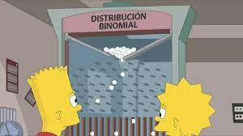

CAPITULO 5
SEIS GRADOS DE SEPARACION

En el episodio Cuatro lamentos y un funeral carecede referencias Matematicas y en siguente episodio es dedicado a matematicas de la probabilidad.
La unica menera de comprender el beisbol es atraves de un analisis matematico
La familia de los simpson van de excursion a la sala de probabilidad, aparece una demostracion experimental de la teoria de probabilidad llamada tablero de golton,
recibe ese nombre por su inventor ingles de forma en las que caen forman una distribucion llamada binomial, es un experimento clasico de probabilidad.
Grace Hopperconstruyoo el primer conpiladpr para un lenguaje de programacion, las matematicas de hopper fueron practas y aplicadas.
Los seis grados esta teoria dice que todas las personas en el mundo estan unidas con un maximo de seis relaciones.